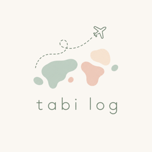

tabilog
Travel log / iOS & AndroidMap your travels across Japan.
Fill in the prefectures you have visited on a map of Japan, and share photos, videos and notes with the people you travelled with. Invite friends and build one album together.